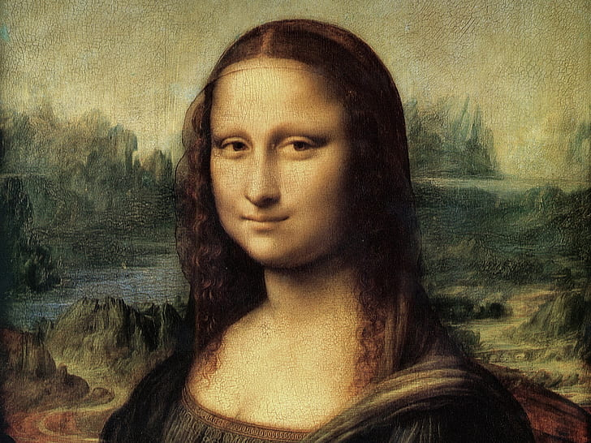
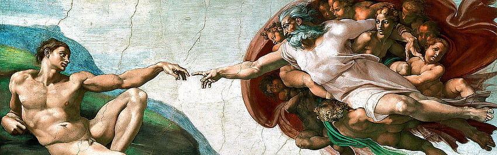
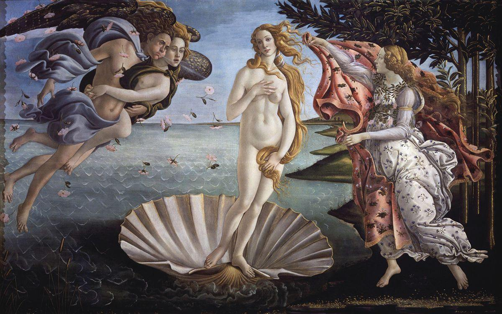
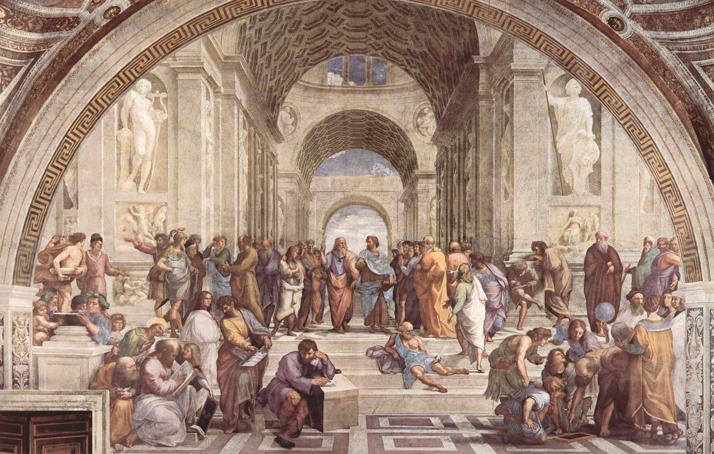

O que é o Renascimento?
O Renascimento foi um movimento cultural, artístico, científico e intelectual que se desenvolveu na Europa entre os séculos XIV e XVII, começando na Itália e se espalhando por outros países europeus. É considerado um dos períodos mais importantes da história, marcando a transição da Idade Média para a Idade Moderna.
"Mona Lisa" (1503-1506) - Leonardo da Vinci
Significado: Esta obra é considerada um exemplo magistral de retrato renascentista, destacando o uso de sfumato por Da Vinci para criar transições suaves entre luz e sombra. O sorriso misterioso de Mona Lisa simboliza o enigma da personalidade humana e a busca pela compreensão do indivíduo, temas centrais no Renascimento.
"A Última Ceia" (1495-1498) - Leonardo da Vinci

Significado: A obra é um estudo profundo de emoção humana e narrativa, com uma composição que centraliza Jesus como o ponto focal. A "Última Ceia" também reflete as preocupações renascentistas com a perspectiva e a representação do espaço tridimensional.
"A Criação de Adão" (1512) - Michelangelo
Significado:Esta obra representa a conexão divina entre Deus e a humanidade, simbolizando o ato da criação e a transmissão da centelha divina. É uma das representações mais famosas do poder criativo de Deus e a nobreza da condição humana, temas centrais na filosofia renascentista.
"O Nascimento de Vênus" (c. 1484-1486) - Sandro Botticelli
Significado: "O Nascimento de Vênus" celebra a beleza idealizada e a harmonia, temas caros ao Renascimento. Vênus representa não apenas a beleza física, mas também a beleza espiritual e a renascença dos ideais clássicos de harmonia e proporção.
"A Escola de Atenas" (1509-1511) - Rafael
Significado: "A Escola de Atenas" simboliza o encontro do pensamento clássico com as ideias renascentistas. A pintura celebra a busca pelo conhecimento, a razão e a sabedoria, destacando a importância da filosofia e das ciências como fundamentos do Renascimento. A composição reflete a harmonia, a proporção e a perspectiva central, que são marcas registradas da arte renascentista.